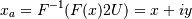

scipy.signal.hilbert¶
- scipy.signal.hilbert(x, N=None, axis=-1)[source]¶
Compute the analytic signal, using the Hilbert transform.
The transformation is done along the last axis by default.
Parameters : x : array_like
Signal data. Must be real.
N : int, optional
Number of Fourier components. Default: x.shape[axis]
axis : int, optional
Axis along which to do the transformation. Default: -1.
Returns : xa : ndarray
Analytic signal of x, of each 1-D array along axis
Notes
The analytic signal x_a(t) of signal x(t) is:

where F is the Fourier transform, U the unit step function, and y the Hilbert transform of x. [R125]
In other words, the negative half of the frequency spectrum is zeroed out, turning the real-valued signal into a complex signal. The Hilbert transformed signal can be obtained from np.imag(hilbert(x)), and the original signal from np.real(hilbert(x)).
References
[R125] (1, 2) Wikipedia, “Analytic signal”. http://en.wikipedia.org/wiki/Analytic_signal